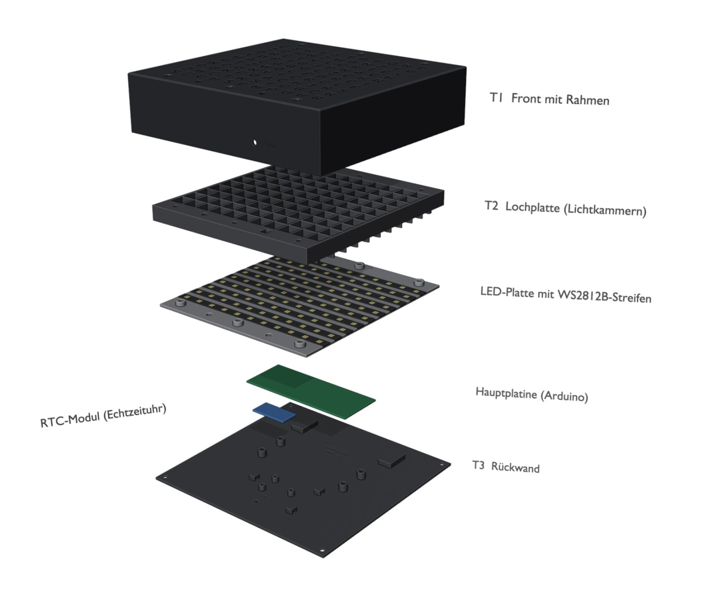

Das Projekt
Die Uhr oben läuft live und zeigt die aktuelle Zeit. Unsere echte Uhr zeigt die Zeit genauso: mit 110 LEDs hinter einer Front aus Buchstaben.
LEDs
WS2812B, einzeln ansteuerbar, 10 Reihen × 11 Buchstaben.
Auflösung
Die Uhr zeigt die Zeit in 5-Minuten-Schritten, wie man sie spricht.
Druckteile
Front, Lochplatte und Rückwand, konstruiert in Blender und gedruckt in PLA.
Sprints
Geplant und umgesetzt mit Scrum, mit 3 Reviews.
Aufbau
Die Explosionszeichnung zeigt alle Teile. Sie stammt direkt aus unserem 3D-Modell.

Technik
Diese Bauteile stecken in der Uhr.
Mikrocontroller
Ein Arduino steuert alle LEDs und liest die Sensoren. Die Software entwickeln wir in VS Code mit PlatformIO und testen sie in der Simulation Wokwi.
Echtzeituhr (RTC)
Das Modul DS1307 zählt die Zeit weiter, auch ohne Strom. Eine Knopfzelle versorgt es.
IR-Fernbedienung
Mit einer Fernbedienung stellen wir die Zeit, die Farbe und die Helligkeit ein.
Lichtsensor (LDR)
Der Sensor misst das Umgebungslicht. Die Uhr dimmt die LEDs automatisch, wenn es dunkel wird.
Eigene Platine
Das Schema und die Leiterplatte haben wir in KiCad entworfen und fertigen lassen.
Speisung
Ein 5-V-Netzteil speist die Uhr über eine Hohlstecker-Buchse.
Konstruktion
Wir haben das Gehäuse für den 3D-Druck geplant. Diese Details machen den Unterschied.
Lichtkammern
Jede LED sitzt in einer eigenen, dichten Kammer. Kein Licht geht in die Nachbarbuchstaben. Die Trennwände sitzen genau auf den Schnittkanten vom LED-Streifen.
Diffusor-Folie
Eine Folie liegt in einer 0,3 mm tiefen Tasche hinter der Front. Sie verteilt das Licht gleichmässig über jeden Buchstaben.
Ohne Stützmaterial
Alle Teile drucken ohne Support. Das Loch für die Buchse wird klein vorgedruckt und danach sauber aufgebohrt.
Einschmelzmuttern
Alle Gewinde sind Messing-Einschmelzmuttern. Die Uhr lässt sich beliebig oft öffnen und schliessen.
Wandmontage
Zwei Schlüssellöcher halten die Uhr an der Wand. Das Kabel führt unten aus dem Gehäuse.
Dieser QR-Code
Du hast ihn gescannt: Er ist direkt in die Rückwand gedruckt.
Leistungsberechnung
Wie viel Strom braucht die Uhr?
| Fall | Rechnung | Strom |
|---|---|---|
| 1 LED, voll weiss | 3 Farben × 20 mA | 60 mA |
| Alle 110 LEDs, voll weiss | 110 × 60 mA | 6,6 A |
| Normalbetrieb (ca. 20 Buchstaben) | 20 × 60 mA | 1,2 A |
| Netzteil 15 W bei 5 V | 15 W ÷ 5 V | 3,0 A |
Der Normalbetrieb liegt weit unter der Grenze vom Netzteil. Zur Sicherheit begrenzt die Software den Strom auf 2,5 A. So bleibt das Netzteil auch bei einem Fehler im Code geschützt.
Team
Klasse AU2024a · ET-BP 2026
Jonas
IR-Steuerung, LED-Matrix, 3D-Modelle
Lukas
Elektroschema und Leiterplatte, LED-Steuerung, 3D-Modelle
Nils
Breadboard, LDR-Steuerung, Materialbestellung, LED-Matrix